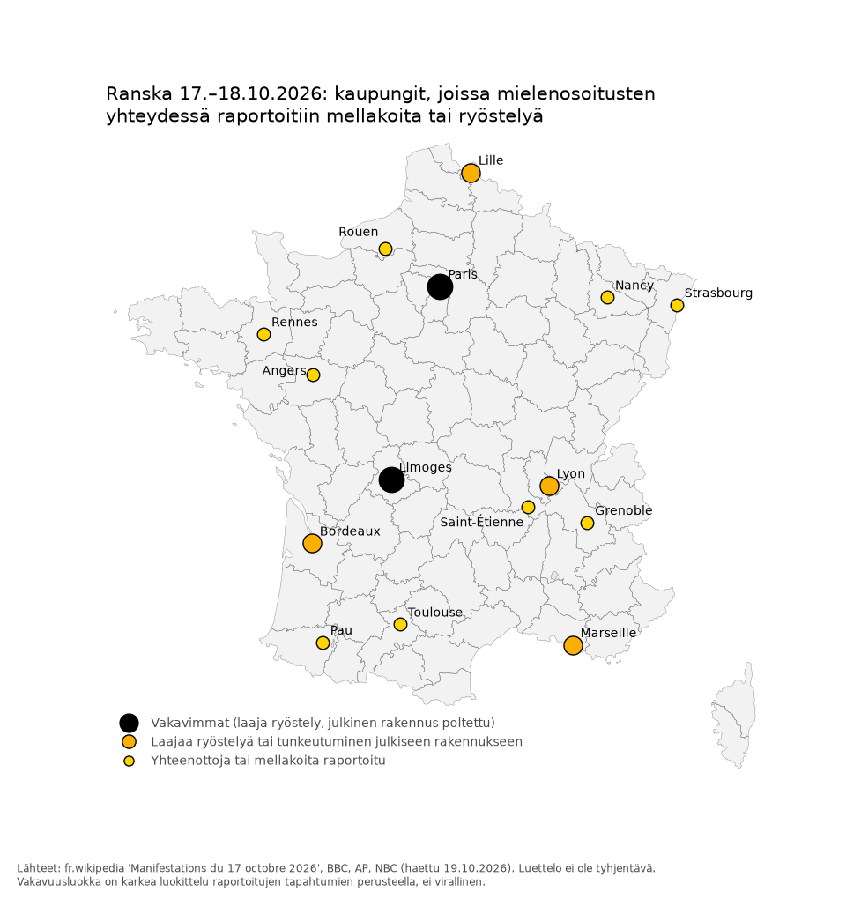

Tiivistelmä
- Kyse ei ole tavanomaisesta lähiömellakasta. Lukiolaisten syyskuussa alkanut liike kasvoi lauantaina 17.10. koko maan kattavaksi mielenosoitukseksi elinkustannuksia vastaan. Mielenosoitusten laidoilla ja niiden jälkeen kaupunkien keskustoissa ryöstettiin liikkeitä ja sytytettiin tuhopaloja.
- Sisäministeriön koostamien tietojen mukaan lauantaina pidätettiin 2 397 ihmistä (RFI 18.10.), ja poliiseja ja santarmeja loukkaantui 997, heistä 7 vakavasti (BFMTV 18.10.). Yhden päivän luvuiksi nämä ovat poikkeuksellisen suuria (tulkinta). Hallitus on itse myöntänyt, että poliisi menetti tilanteen hallinnan.
- Hallituksen mukaan väkivallan takana oli ultravasemmisto, jonka seuraan liittyi ryöstelijöitä. Tämä on hallituksen väite, jonka tueksi ei ole toistaiseksi esitetty julkista näyttöä. Maahanmuuttoon ja Venäjään liittyvät selitykset ovat tulkintoja tai kiistanalaisia.
1. Mitä tiedetään
- Tausta. Lukiolaiset ovat osoittaneet syyskuusta lähtien mieltään opettajapulan ja koulurakennusten huonon kunnon vuoksi. Opetusministeri Édouard Geffray lupasi 8.10. kouluihin 3 000 sijaisopettajaa (BBC 18.10.), mutta mielenosoitukset eivät loppuneet. Myöhemmin mukaan tulivat ammattiliitot ja keltaliivit, ja pääteemoiksi nousivat elinkustannukset ja polttoaineen hinta (France 24 18.10.). BBC Verifyn mukaan ensimmäiset kehotukset 17.10. mielenosoitukseen tulivat pieneltä TikTok-tililtä (BBC 19.10.).
- Lauantai 17.10. Mellakoita ja ryöstelyä oli ainakin Pariisissa, Marseillessa, Lyonissa, Bordeaux’ssa, Lillessä, Rennesissä, Toulousessa, Angers’ssa, Grenoblessa ja Limoges’ssa. Limoges’ssa kaupungintalo syttyi tuleen ja sen kellotorni romahti (TF1 Info 17.10.; BBC 18.10.).
- Pidätysten määrä tarkentui vähitellen. Pääministeri Sébastien Lecornu kertoi lauantai-iltana 1 200 pidätyksestä, ja sisäministeri Laurent Nuñez puhui sunnuntaiaamuna 1 800 pidätyksestä (actuforcesdelordre.fr 18.10.). Sisäministeriön sunnuntai-iltana koostama luku on 2 397 (RFI 18.10.). Ministeriön aiemmissa loukkaantuneiden välitiedoissa olivat mukana myös palomiehet. Koostettu luku koskee poliiseja ja santarmeja.
- Pariisi. Pariisin poliisiprefektuurin ja syyttäjänviraston mukaan lauantaina 17.10. pidätettiin 855 ihmistä ja säilöön otettiin 557, heistä 151 alaikäisiä (franceinfo 18.10.). Sunnuntaina 18.10. yhteenotot jatkuivat: pidätettyjä oli 208, heistä 49 alaikäisiä, ja säilöön otettiin 145 (Ouest-France 19.10.). Sunnuntain luvut ovat väliaikaisia.
- Merentakaiset alueet. Guadeloupessa kolme poliisia haavoittui ampumalla, ja alaikäisille määrättiin ulkonaliikkumiskielto (Le Figaro 19.10.).
- Yritykset. Kauppa-alan järjestöt kertovat, että vahingot ovat laajoja. Vahinkojen määrästä on toistaiseksi vain arvioita, eikä vakuutusala ole vielä julkaissut omaa lukuaan.
- Viranomaisten toimet. Nuñez on myöntänyt, että poliisi menetti hallinnan joissakin kaupungeissa. Lecornu ilmoitti 19.10. paikallisista ja osittaisista ulkonaliikkumiskielloista. Poikkeustilaa ei ole julistettu, mutta sitä ei ole myöskään suljettu pois (AP 19.10.). Pariisin alueella lähes 200 tutkijaa käy läpi valvonta- ja somevideoita (Euronews 19.10.).
- Päätökset 19.10. Lecornu lupasi ”massiivisen” rikosoikeudellisen vastauksen sekä tukea vahinkoja kärsineille liikkeille: niiden työntekijät pääsevät lomautustuelle, ja liikkeiden kassatilannetta varten perustetaan erillinen tukirahasto, jonka suuruutta ei ole vielä kerrottu. Lecornu ei sulkenut pois poikkeustilaa eikä perustuslain 16. artiklan käyttöä (Le Figaro 19.10.).
- Seuraava valtakunnallinen mielenosoituspäivä on lauantaina 24.10.
Keskeiset luvut
| Mittari | Luku | Lähde |
|---|---|---|
| Pidätykset koko maassa la 17.10. (sisäministeriön koostama luku) | 2 397 | RFI 18.10. |
| Pidätysten välitiedot 17.10. | 1 200 (Lecornu, la-ilta) → 1 800 (Nuñez, su-aamu) | actuforcesdelordre.fr 18.10. |
| Loukkaantuneet poliisit ja santarmit 17.10. | 997, heistä 7 vakavasti | BFMTV 18.10. |
| Pidätykset Pariisissa la 17.10. | 855; säilöön 557, heistä 151 alaikäisiä | franceinfo 18.10. |
| Pidätykset Pariisissa su 18.10. | 208, heistä 49 alaikäisiä; säilöön 145 | Ouest-France 19.10. |
Kartta

Aineisto: kaupungit.csv. Kartan vakavuusluokat on jaettu karkeasti raportoitujen tapahtumien perusteella, eivätkä ne ole virallisia. Kaupunkikohtaisia lukuja on julkaistu vain harvoista kaupungeista.
2. Vertailu aiempiin levottomuuksiin
| 2005 (27.10.–17.11., 22 päivää) | 2023 (27.6.–10.7., 14 päivää) | 2026 (17.10., 1 päivä) | |
|---|---|---|---|
| Pidätykset | 4 728 kriisin aikana | 4 282 säilöönottoa | 2 397 |
| Loukkaantuneet viranomaiset | 224 (sisältää palomiehet) | 782 | 997 (poliisit ja santarmit) |
| Lähde | Poliisin ylijohto, Le Nouvel Obs 26.10.2006 | Senaatti 10.4.2024 | Sisäministeriö, RFI 18.10.2026 |
Vertailu on tulkinta, sillä mittarit eivät ole täysin vertailukelpoisia: vuonna 2026 kyse on yhdestä päivästä, aiemmin viikkojen levottomuuksista. Vuosina 2005 ja 2026 on laskettu pidätyksiä, vuonna 2023 säilöönottoja. Vuoden 2005 luku 4 728 kattaa pidätykset mellakoiden aikana; myöhemmät pidätykset mukaan lukien luku on 6 056 (Le Nouvel Obs 26.10.2006). Päivää kohden pidätyksiä oli 2005 noin 215, 2023 noin 306 säilöönottoa ja 2026 yhdessä päivässä 2 397 (tulkinta).
Lähin vertailukohta ovat keltaliivien mielenosoitukset 2018–2019. Nytkin päivä osui keltaliivien vuosipäivään, taustalla oli polttoaineen hinta, ja liike syntyi somessa ilman keskusjohtoa. Erojakin on (tulkinta): nyt liikkeelle panevana voimana olivat lukiolaiset ja TikTok, ja ryöstelyssä on samoja piirteitä kuin vuoden 2023 Nahel-mellakoissa.
3. Mistä kiistellään
- Elinkustannukset syynä. Mielenosoitusten taustasyynä tämä on tuettu: presidentti Macron liitti puheessaan 18.10. mielenosoittajien huolen polttoaineen hintaan (Élysée 18.10.). Ryöstelyn selityksenä se on tulkinta.
- Ultravasemmisto. Hallituksen väite: Macron syytti väkivallasta ultravasemmistolaisia pienryhmiä, joihin liittyi rikollisia (Élysée 18.10.). Lecornun mukaan ultravasemmisto pyrkii aiheuttamaan epäjärjestystä presidentinvaaleihin asti (BBC 19.10.). Väitteen tueksi ei ole toistaiseksi esitetty julkista näyttöä. Lecornu on luvannut erillisen tilannekatsauksen yhdessä tiedustelupalveluiden kanssa. Somessa väitettä on venytetty LFI-puolueen syyllisyydeksi, mihin ei ole näyttöä. Jean-Luc Mélenchon vaati hallitusta todistamaan väitteensä (BBC 19.10.).
- Maahanmuutto ja ”sisällissota”. Tulkinta. Pidätettyjen taustasta ei ole julkaistu virallista tietoa. Tämän kertomuksen tueksi on levitetty tekoälyllä tehtyä kuvaa ryöstetyistä vanhuksista (20 Minutes 19.10.; EFE Verifica).
- Ulkomainen vaikuttaminen. Kiistanalainen. AI Forensics kävi läpi 4 000 TikTok-videota eikä löytänyt selviä merkkejä koordinoinnista (France Inter 19.10.). Viranomaisten Viginum-yksikkö ei ollut 19.10. mennessä havainnut ulkomaista vaikuttamista (20 Minutes 19.10.). Tuettua sen sijaan on, että ulkomaiset tilit levittivät vanhoja videoita ja liioittelivat niillä kaaosta (TF1 Info 5.10.; AFP Fact Check 13.10.).
- Poliisin epäonnistuminen. Tuettu: sisäministeri on itse myöntänyt hallinnan menetyksen. Väite, jonka mukaan valtio olisi järjestänyt mellakat, on näytön vastainen.
- Poliisiväkivalta. Osin tuettu, mutta tunnetuimmat yksittäiset videot ovat osoittautuneet vääriksi. Viraali video, jossa poliisi lyö käsiraudoissa olevaa nuorta, on tehty tekoälyllä (France 24 9.10.). Myös väitteet ryöstelevistä poliiseista ja hajaantumiskäskyn aikana mielenosoittajia solvanneesta santarmista on oikaistu (Paris Match 19.10.; Le Parisien 18.10.). Vakavasti loukkaantuneista mielenosoittajista on kerrottu erikseen (France 24 18.10.).
- Vahvistamattomat väitteet. Somessa kiertää väitteitä sotilasaseista alaikäisten mellakoitsijoiden käsissä. Ne ovat vahvistamattomia. Marseillen prefektuurin esittämä arvio ryöstelijöiden määrästä on kiistanalainen, sillä pormestari Benoît Payan on kyseenalaistanut sen.
- Väärennökset. Faktantarkistajat ovat kumonneet useita kiertäneitä kuvia ja videoita. Viraaleimmat niistä on tehty tekoälyllä, ja kukin tuki eri kertomusta (actu.fr 19.10.; AFP Fact Check 9.10.; AFP Factuel 7.10.; France 24 14.10.).
4. Mitä Suomi voi oppia (tulkinta)
- Elinkustannuksista ja energian hinnasta syntyvä tyytymättömyys voi levitä TikTokissa muutamassa viikossa ilman varsinaista järjestäjää. Tilanteen ennakointi vaatii siksi myös somen seurantaa eikä pelkkää perinteistä tiedustelua.
- Tekoälyllä tehdyt väärennökset kuuluvat nykyään kriiseihin vakiona. Julkisesti kannattaa kommentoida vain tarkistettua tietoa, ja syyllisiksi esitettyjä tahoja kannattaa nimetä vain lähteeseen viitaten.
- Pariisissa lauantaina säilöön otetuista 557:stä 151 oli alaikäisiä (franceinfo 18.10.), eli noin neljännes. Muista kaupungeista vastaavia lukuja ei ole. Tämä korostaa koulun ja nuorisotyön merkitystä. Koska liike sai alkunsa opettajapulasta ja koulujen kunnosta, vertailukohta Suomeen on suora.
5. Ulkomaisten tahojen mahdollinen vaikuttaminen
Tilanne 19.10.2026 noin klo 19.45 (Helsingin aikaa). Näytön tasot: Virallisesti todettu = viranomainen tai tuomioistuin; OSINT-havainto = tunnustettu tutkimus- tai faktantarkistustaho; Ei näyttöä / väite = media, nimettömät lähteet tai asiantuntijan havainto ilman julkaistua aineistoa.
Ydin
- Ei ole julkista näyttöä siitä, että vieras valtio olisi järjestänyt tai ohjannut 17.10. mielenosoituksia, mellakoita tai ryöstelyä. Ranskalaiset viranomaiset eivät ole syyttäneet ketään ulkomaista tahoa väkivallasta, ja AI Forensics ei löytänyt koordinointia TikTok-aineistosta.
- Dokumentoitu ulkomainen vaikuttaminen koskee verkkoa ja lokakuun alun lukiolaisliikettä. Venäläinen Matrjoška-verkosto julkaisi väärennettyjä uutisia, ja Ranska puhutteli Iranin suurlähettilään Iranin virallisten tilien levittämästä disinformaatiosta.
- Venäjän todetut sabotaasit muualla Euroopassa ovat taustaa eivätkä yhteys: mikään lähde ei kytke niitä Ranskan lokakuun 2026 tapahtumiin.
Mitä 17.10. tapahtumista tiedetään
- EU Perspectivesin mukaan Viginum ei ollut havainnut merkittävää ulkomaista operaatiota 17.10. mielenosoituskutsun takana. Viginumin omaa julkaisua ei löytynyt, ja sama tieto on La Clé publique -julkaisulta L'Appelin kautta (EU Perspectives 19.10., L'Appel 18.10.). Ei näyttöä / väite (toisen käden tieto).
- Kutsu syntyi 7.9. lukiolaisen TikTok-tililtä "V2" (noin 5 miljoonaa katselua). AI Forensicsin johtaja Marc Faddoul kertoi, että noin 4 000 #17octobre-videosta (yli 760 miljoonaa katselua) ei löytynyt "selviä merkkejä koordinoinnista". Tieto on haastattelusta, eikä kirjallista raporttia ole julkaistu (France Inter 19.10.). OSINT-havainto.
- Euroopan komission tiedottaja Thomas Regnier ei vahvistanut ulkomaista lietsontaa (EU Perspectives 19.10.). Virallisesti todettu (ei havaintoa).
- Nimettömän virkamiehen mukaan verkkoliikennettä tuli "osin ulkomaisilta tileiltä" (Rapporteur 19.10.). Ei näyttöä / väite.
- Kreml (Peskov) kiistää osallisuuden (TRT 19.10.). Ei näyttöä / väite.
- Taustaksi luvuista: Pariisissa yksi mielenosoittaja kuoli 17.10. sydänpysähdykseen kulkueen aikana (poliisiprefektuuri); syyttäjä tutkii kuolinsyytä, eikä yhteyttä väkivaltaisuuksiin ole kerrottu (Le Parisien 18.10., actu.fr).
Verkkovaikuttaminen lukiolaisliikkeen aikana (ennen 17.10.)
- NewsGuardin mukaan Matrjoška julkaisi kahdessa päivässä 20 väärennettyä uutista, joissa käytettiin muun muassa AFP:n, DW:n ja Le Monden nimiä. NewsGuardin mukaan ne saivat vähän liikennettä (NewsGuard 7.10.). OSINT-havainto.
- Matrjoška-botit kytkivät lukiolaisprotestit Ranskan "militarisointiin" (The Insider). OSINT-havainto.
- Ranskan ulkoministeriö kutsui 7.10. Iranin suurlähettilään puhutteluun "disinformaatiokampanjasta", jota Iranin ulkoministeriön viralliset tilit kävivät lukiolaisliikkeestä. Puhuttelu ei koske 17.10. väkivaltaa (France 24 7.10.). Virallisesti todettu.
- Ulkomaiset tilit, muun muassa hindinkieliset, levittivät vanhoja videoita protestivideoina. Valtiollista toimijaa ei nimetty (AFP Fact Check 9.10.). OSINT-havainto.
Väitteet ilman julkaistua näyttöä
- La Lettren (16.10.) mukaan SGDSN ja Viginum laativat Iranin verkkotoiminnasta muistion, jota Élysée ei julkistanut. Muistio on laadittu ennen 17.10. ja on julkaisematon (La Lettre). Ei näyttöä / väite.
- The New Worldin mukaan nimettömät poliisi- ja tiedustelulähteet ovat väittäneet Iranin, Algerian ja Venäjän vahvistaneen väkivaltaan yllyttäneitä vaikuttajia. Sciences Pon tutkija David Colon kertoo havainneensa Storm-1516:een yhdistettyjä tilejä, mutta aineistoa ei ole julkaistu (The New World 19.10.). Ei näyttöä / väite.
- Kiina: kytköstä mellakoihin ei ole osoitettu (Civic Intelligence 18.10.). Ei näyttöä / väite.
Viranomaisten yleiset arviot (tausta)
- Viginum on havainnut yli 100 operaatiota presidentinvaaleja vastaan, pääosin Matrjoška ja Storm-1516 (AFP/France 24 14.10.). Viginumin raportti 11.6.2026 käsittelee Venäjän toimintamalleja kunnallisvaaleissa (SGDSN). Virallisesti todettu.
- DGSI varoitti helmikuussa 2024 Venäjän käyttävän välikäsiä jakolinjojen syventämiseen (TF1 23.2.2024). Virallisesti todettu.
- MI5 (16.10.2025) ja BfV (5/2025) varoittavat Venäjän verkossa värväämistä "kertakäyttöagenteista". Virallisesti todettu.
- Eurojustin mukaan värvätyt ovat usein taloudellisesti haavoittuvia, ja heitä ohjataan viestisovelluksilla ja heille maksetaan kryptovaluutalla (Eurojust 6.3.2026). Virallisesti todettu.
- Kertakäyttöagentit ja mielenosoitukset: Moldovan viranomaisten mukaan Venäjään kytkeytyneet verkostot maksoivat ihmisille mielenosoituksiin osallistumisesta (Politico). Ei näyttöä / väite (viranomaisväite median kautta). Länsi-Euroopan mellakoista vastaavaa attribuutiota ei löytynyt.
- Europolilta ja Interpolilta ei löytynyt mellakoita koskevaa tiedotetta. Lähin Europolin tiedote koskee rikollisjengien tilaamaa väkivaltaa, ei valtiollista toimintaa (Europol 2.10.).
Venäjään yhdistetyt sabotaasit Euroopassa: TAUSTAA, EI YHTEYS
Mikään alla olevista lähteistä ei kytke tapauksia 17.10. tapahtumiin.
| Maa | Päivämäärä | Tapaus | Taso | Lähde |
|---|---|---|---|---|
| Ranska | 31.10.2023 | Daavidin tähdet Pariisissa: 1 095 RRN-verkostoon kytkettyä bottia levitti kuvia; tilaaja selvitetään tutkinnassa | Virallisesti todettu (verkkolevitys); Ei näyttöä / väite (fyysisen teon tilaaja) | Ranskan Etyj-edustusto 9.11.2023 |
| Viro | 2024 | Ukrainalaisen ravintolan ja kaupan tuhopoltto, GRU, tuomio | Virallisesti todettu | AP News |
| Liettua | 2024 | Tuhopolttoyritykset Ukrainaa toimittavaan tehtaaseen, GRU, syyte | Virallisesti todettu | Reuters |
| Iso-Britannia | 20.3.2024 | Leytonin Ukraina-varaston tuhopoltto, Wagner, tuomiot | Virallisesti todettu | Crown Prosecution Service |
| Puola | 13.4.2024 | OBI-rautakaupan tuhopoltto Varsovassa, syyte | Virallisesti todettu | Prokuratura Krajowa (gov.pl) |
| Saksa | 17.4.2024 | Bayreuth: sabotaasin valmistelu, tuomio | Virallisesti todettu | Bayerisches Staatsministerium der Justiz, PM 80/2025 |
| Liettua | 9.5.2024 | IKEA Vilnassa, GRU, tuomio | Virallisesti todettu | AP News 24.11.2025 |
| Puola | 12.5.2024 | Marywilska 44 -kauppakeskuksen palo | Virallisesti todettu | Puolan oikeusministeriö (gov.pl) |
| Ranska | 14.5.2024 | Punaiset kädet Shoah-muistomerkillä, neljä tuomittua | Virallisesti todettu (ulkomainen sekaantuminen); Venäjää ei nimetty tuomiossa | franceinfo |
| Ranska | 1.6.2024 | Arkut Eiffel-tornilla | Ei näyttöä / väite (tarkennetaan) | France 24 / AFP (lähde tarkennetaan) |
| Tšekki | 6/2024 | Prahan bussivarikko, tekijä tuomittu. Syyttäjän mukaan näyttö ei riitä Venäjän tilaukseksi, mutta BIS:n johtajan mukaan jäljet johtavat Venäjälle | Virallisesti todettu (pääministerin ja BIS:n arvio) | AP News, Novinky |
| Saksa / Iso-Britannia / Puola | 20.7.2024 | Itsestään syttyvät paketit (DHL, DPD). Eurojust 6.3.2026: 22 epäiltyä toimi GRU:n lukuun, ja kaksi asiaa on viety tuomioistuimiin Liettuassa ja Puolassa | Virallisesti todettu | Eurojust |
| Suomi | 25.12.2024 | Eagle S -aluksen kaapelivauriot; syyte koskee vain miehistöä | Ei näyttöä / väite (Venäjä-kytkös) | Tuomioistuimet.fi |
| Saksa (Berliini, Brandenburg, Baijeri, Baden-Württemberg) | 5.2.2025 | Yli 270 auton pakoputken tukkiminen ennen vaaleja (teot 12/2024–1/2025, julkistettu 5.2.2025) | Ei näyttöä / väite (viranomaisepäily median kautta) | DW |
| Ranska | 9.9.2025 | Sianpäät moskeijoiden edessä; Serbiassa 11 pidätettyä | Ei näyttöä / väite (Venäjää ei nimetty) (tarkennetaan) | RFI (lähde tarkennetaan) |
| Puola | 15.11.2025 | Rautatiesabotaasi Mikassa ja Puławyssa | Virallisesti todettu | Puolan pääministerin kanslia (gov.pl) |
| Saksa | 4.8.2026 | Räjähdedrooni Leipzig/Hallen lentoasemalla; liittohallitus nimesi Venäjän 1.9.2026 | Virallisesti todettu | AP News |
| Viro | 15.8.2026 | Milrem Roboticsin tuhopoltto | Virallisesti todettu | Eesti Vabariigi Valitsus |
Analyysi (tulkinta): taulukossa on 18 tapausta. Niistä 13 on virallisesti todettu, 4 on pelkkä väite ja 1 on jaetulla tasolla (Daavidin tähdet). Ranskan neljä tapausta ovat symbolisia provokaatioita, joissa on muutama maksettu tekijä ja jälkikäteinen verkkolevitys. Yksikään taulukon tapaus ei koske joukkomielenosoituksen lietsomista. Mittakaava poikkeaa 17.10. tapahtumista, joissa pidätettiin yhdessä päivässä 2 397 ihmistä (AFP/RFI 18.10.). Mielenosoittajia oli sisäministeriön mukaan 550 000 ja CGT:n mukaan 800 000 (France 24 18.10., MTV Uutiset 17.10.). Otos ei ole järjestelmällinen, sillä CSIS:n, IISS:n ja AP:n tietokantoja ei käyty läpi. Vertailukohdaksi: CSIS laski Venäjän iskuja Euroopassa 3 vuonna 2022, 12 vuonna 2023 ja 34 vuonna 2024 (CSIS).
Avoimet kysymykset
- Viginumin oma kanta 17.10. tapahtumiin ja Lecornun lupaama tiedustelukatsaus.
- AI Forensicsin aineisto ja menetelmä; kirjallista raporttia ei ole julkaistu.
- La Lettren mainitseman Iran-muistion sisältö.
- Onko Storm-1516:sta tai Matrjoškasta julkaistu havaintoja 17.10. jälkeen.
- Pikaoikeudenkäynnit: mainitaanko niissä maksuja, Telegram-värväystä tai ulkomaisia ohjaajia.
Seurattavaa ennen 24.10.
Viginumin ja SGDSN:n sekä ulkoministeriön julkaisut, NewsGuardin, AFP Factuelin ja AI Forensicsin uudet havainnot, väärennetyt mediabrändit ennen 24.10. sekä oikeuskäsittelyjen tiedot.
Vielä avoinna
- Pikaoikeudenkäynnit ja tuomiot sekä yrittäjien tukirahaston suuruus.
- Poltettujen autojen määrä ja vakuutusvahingot, kun luvut julkaistaan.
Lähteet
- https://actu.fr/ile-de-france/paris_75056/manifestation-du-17-octobre-le-vrai-du-faux-sur-la-photo-du-couple-d-octogenaires-depouille-a-paris_64943052.html
- https://actuforcesdelordre.fr/2026/10/18/nunez-1800-interpellations-500-blesses-policiers-gendarmes-pompiers/
- https://apnews.com/article/france-protests-riots-looting-75825aafc5412ae389c6d41443b4082e
- https://factcheck.afp.com/doc.afp.com.D2L26WE
- https://factcheck.afp.com/doc.afp.com.D2LR764
- https://factuel.afp.com/doc.afp.com.D2GF7CQ
- https://verifica.efe.com/la-imagen-de-los-ancianos-en-ropa-interior-asaltados-por-manifestantes-en-francia-esta-hecha-con-ia/
- https://www.20minutes.fr/societe/4255681-20261019-violences-17-octobre-personnes-agees-depouillees-rue-ia
- https://www.bbc.com/news/articles/c6d937wedj7jo
- https://www.bbc.com/news/live/c893v4gx2e47t
- https://www.bbc.com/news/videos/c6e3xjw37wn7o
- https://www.bfmtv.com/police-justice/violences-du-7-octobre-le-ministere-de-l-interieur-recense-2-397-interpellations-997-policiers-et-gendarmes-blesses-dont-7-graves_AD-202610180350.html
- https://www.elysee.fr/front/pdf/elysee-module-27454-fr.pdf
- https://www.euronews.com/2026/10/19/france-launches-massive-law-enforcement-operation-after-weekend-looting-pm-says
- https://www.france24.com/fr/france/20261009-france-blocus-lyc%C3%A9ens-violence-polici%C3%A8re-contenus-trompeurs-g%C3%A9n%C3%A9r%C3%A9s-par-ia
- https://www.france24.com/fr/france/20261014-attention-%C3%A0-ces-fausses-pancartes-cr%C3%A9%C3%A9es-par-l-ia-pour-d%C3%A9cr%C3%A9dibiliser-les-lyc%C3%A9ens
- https://www.france24.com/fr/france/20261018-col%C3%A8re-et-honte-transparence-attendue-ce-qu-il-faut-retenir-de-l-allocution-d-emmanuel-macron
- https://www.france24.com/fr/france/20261018-la-france-face-aux-stigmates-d-un-chaos-in%C3%A9dit
- https://www.franceinfo.fr/economie/greve/mobilisation-du-17-octobre-1-200-personnes-ont-ete-interpellees-selon-sebastien-lecornu-qui-deplore-des-degres-de-violence-inacceptables_8242513.html
- https://www.lefigaro.fr/actualite-france/en-direct-violences-manifestations-pillages-degats-paris-allocution-macron-17-octobre-emutes-20261019
- https://www.lefigaro.fr/politique/couvre-feux-localises-etat-d-urgence-ce-qu-il-faut-retenir-des-annonces-de-sebastien-lecornu-pour-repondre-aux-violences-du-17-octobre-20261019
- https://www.leparisien.fr/faits-divers/mobilisation-du-17-octobre-premiere-sommation-la-gendarmerie-dement-une-video-accusant-un-fonctionnaire-dinsulte-18-10-2026-I6C5KHAXQZDP7ISD4MDPSSCBGY.php
- https://www.ouest-france.fr/faits-divers/violences/violences-du-17-octobre-plus-de-1-000-personnes-ont-ete-interpellees-a-paris-durant-le-week-end-cb98f136-cbb9-11f1-af3e-be5615cfd679
- https://www.parismatch.com/actu/faits-divers/personnes-agees-depouillees-policiers-pilleurs-les-fake-news-de-la-manifestation-du-17-octobre-277681
- https://www.radiofrance.fr/franceinter/podcasts/nos-vies-numeriques/nos-vies-numeriques-du-lundi-19-octobre-2026-2473845
- https://www.rfi.fr/fr/en-bref/20261018-france-2397-interpellations-997-policiers-et-gendarmes-bless%C3%A9s-dont-7-graves
- https://www.tf1info.fr/international/verif-manifestations-lyceennes-sur-les-reseaux-sociaux-des-comptes-etrangers-desinforment-avec-de-vieilles-videos-2468185.html
- https://www.tf1info.fr/justice-faits-divers/la-mairie-de-limoges-est-en-feu-l-hotel-de-ville-incendie-par-des-individus-en-marge-de-la-mobilisation-du-17-octobre-2470543.html
- https://www.nouvelobs.com/societe/20061026.OBS7047/le-bilan-des-emeutes-de-2005.html
- https://www.senat.fr/salle-de-presse/communiques-de-presse/presse/10-04-2024/emeutes-de-juin-2023-comprendre-evaluer-reagir.html